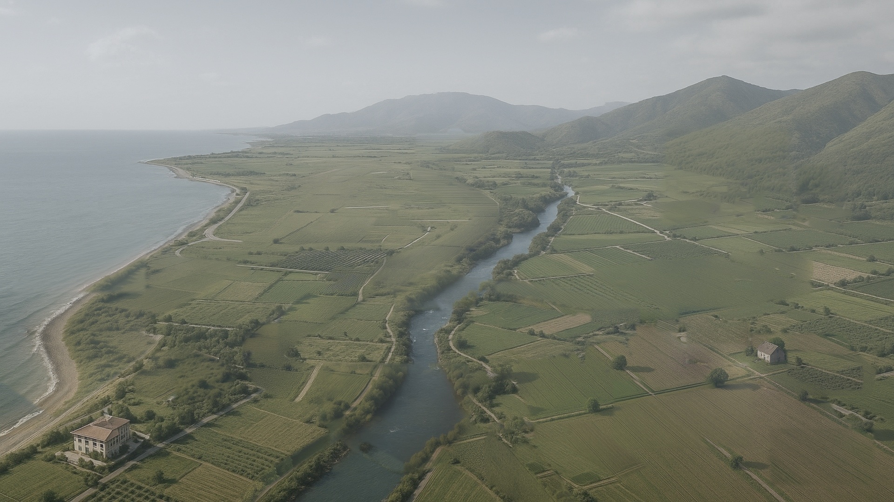
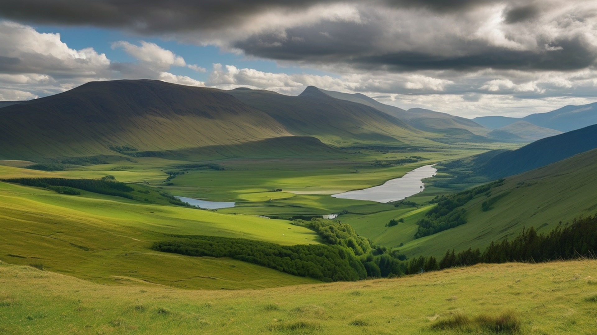
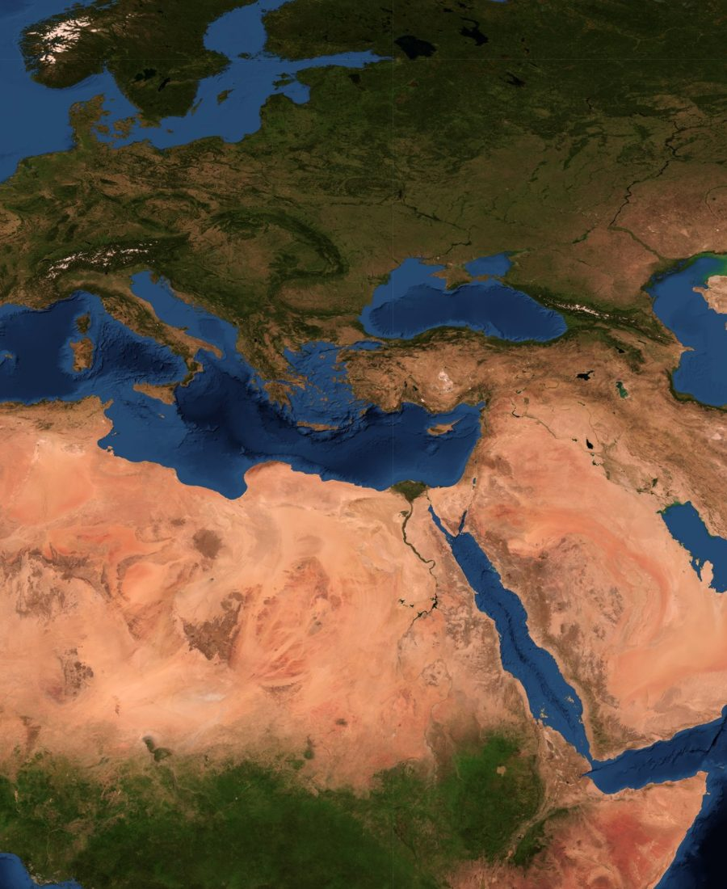

01 — İnteraktif
World
World
with Limak
Limak'ın ürettiği her şeyi sahaya taşıyın. Liman, enerji, ulaşım ve yaşam alanları yerini aldıkça bölge birlikte büyüyor.
Dünyayı kur
02 — Zaman çizelgesi
50 Yıl,
50 Yıl,
Bir Miras
1976'da bir müteahhitlik bürosu. Bugün 14 ülkede 8 sektör. Rayı kaydır, her durağın bugüne bıraktığı izi gör.
Zamanda yürü
03 — Dünya haritası
Limak
Limak
Dünyada
Tüm dünya tek ekranda. Bir noktaya dokunun; kamera o yatırıma uçsun.
Dünyayı gez